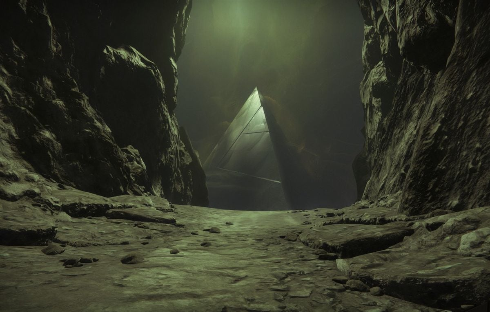
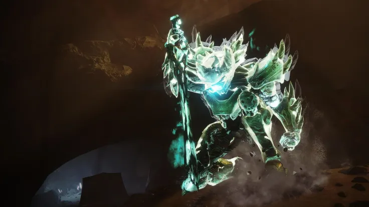

Po smrti Riven se s Ghostem vydáváme blíže k naší domovské planetě, a to na náš Měsíc. Tam se potkáváme s Eris; bývalou Strážkyní, a nám dobře známým spojencem. Při naší cestě k Eris jsme se na povrchu Měsíce střetli s neobvyklým počtem Hive s rysy odlišnými od ostatních známých druhů. Tento druh má karmínově zalitý povrch těla, a namísto temných, tmavě zeleně zářících struktur vystavují vysoké věže z tmavé rudé, barevně podobné jejich vlastním tělům. Pro našeho Strážce nejsou však neobvykle zbarvení Hive problém, a brzy postupujeme dále, až se konečně dostaneme k útočišti, které Eris na Měsíci založila. Něco se nám na ní ale nezdá - obklopuje ji pět zvláštních, tmavě rudých duší - a jak se brzy dovídáme, duše patří padlým členům týmu, do kterého Eris jednou patřila, z dávné doby, dlouho před začátkem příběhu našeho Strážce. Eris tvrdí, že výskyt rudých přízraků a Hive na Měsíci není shodou náhod. Podařilo se jí vystopovat nejsilnější bod výstupu podivné energie, kterou přízraky jejího týmu vyzařují. Náš Strážce se za zdrojem vydá; je to obrovská prasklina uprostřed ničeho, avšak vespod propasti se nachází něco temnějšího. Jakmile náš Strážce sestoupí o pár úrovní níže, spatří ji v celé své kráse: Gigantickou, plně černou pyramidu, ležící uprostřed obrovské propasti. Pyramida vyzařuje velmi silné množství té podivné energie, jako kdyby se nás snažily posednout naše noční můry. Po pokusu se k pyramidě přiblížit dřív uslyší náš Strážce šepot. Šepot se stejným hlasem, jako náš Ghost. V tu chvíli se před námi zjeví tři figury: Fikrul, nedávno pohřben našimi silami, Ghaul, dlouho mrtvý vůdce Rudého Legionu, a Crota, nechvalně známý a nejsilnější Oryxův potomek, který v jeho době povraždil více Strážců, než Ghaulova armáda za celou Rudou Válku. Všichni tři už ale jednou zemřeli, a ani jeden z nich nemají schopnost se sami oživit, natož stát bok po boku. Byly to jen iluze, a Eris se naštěstí podařilo nás z propasti vysvobodit. Co Eris překvapilo nejvíce je, že se před námi, ze všech možných hrůz, kterými si náš Strážce prošel, zjevil zrovna Crota.


Po našem návratu informujeme Eris o našem objevu. Eris se o původu pyramidy nezmíní; pouze zmíní, že přízraky podobné těm, se kterými jsme se setkali, se nacházejí po celém měsíčním povrchu. Také nás varuje, ať nevěříme ničemu, co z pyramidy vychází, včetně onoho hlasu. S její pomocí se nám podaří několika těchto přízraků, těchto nočních můr Strážců zbavit nadobro. Jedna otázka ale stále zůstává: Je Crota, kterého manifestuje pyramida, stejně mocný, jako opravdový Crota? Crota byl mocný Hive, který byl zodpovědný za smrt všech členů Erisina týmu. Eris se jako jediné podařilo z gigantické jámy, kterou Crota na měsíci nehcal zbudovat, zvané Hellmouth uprchnout, a to pouze díky obětování jejího Ghosta, což ji ponechalo navždy smrtelnou. Samotný Crota padl v bitvě s naším Strážcem, v bitvě která se odehrála dlouho před Ghaulovou invazí naší Země. Po vymýtění přízraků Erisina týmu se dostáváme do hlavní struktury karmínových Hive; Do mohutné věže zvané Scarlet Keep. Zde se střetáváme s Hashladûn, nejmocnější z Crotových potomků. Nemá ale proti našemu Strážcovi šanci, a stejně jako její sestry padne v boji. Hashladûnina smrt nám prozradila mnoho, například to, že karmínově zbarvení Hive se nazývají Hidden Swarm, a důvod jejich přítomnosti na Měsíci je udržování a rozšiřování působení přízračných entit tvořených pyramidou. Rozptýlené všude po měsíčním povrchu, včetně jámy Hellmouth, náš Strážce posbíral kusy zbroje, které měli příslušníci Hidden Swarm použít, aby se bezpečně dostali na vnitřní stranu pyramidy. Bez jiné možnosti se náš Strážce v oné zbroji vydá zpět do propasti, kde se pyramida nachází. Tentokrát žadný Fikrul, Ghaul, ani Crota. Tentokrát nás pyramida pustila blíže, a když to vypadalo že na naši přítomnost nereaguje, nás s velkou silou chytil proud energie a začal nás táhnout přímo do pyramidy. Těsně před srážkou se náš Strážce objevil na druhé straně trupu pyramidy. Uvnitř byla jediná cesta vpřed, která nás zavedla k již známým tvářím. První byl Fikrul, kterého jsme porazili s přehledem. Druhý byl Ghaul, který padl podobným způsobem jako na konci Rudé Války. Na konci tunelu pyramidy byl podstavec, na něm nám dobře známý nepřítel: Crota. Jeho iluze nebyla zdaleka tak silná, jako sám Crota, ale vykazovala značné prvky minulosti. Ale stejně jako všechny ostatní, i Crotova iluze padla, a ačkoli přízraky z Měsíce úplně nezmizely, ty nejsilnější a nejúčinnější se mezi nimi už nenacházeli. Krátce po naší výhře nad iluzemi pyramidy se Eris z Měsíce záhadně vypařila.